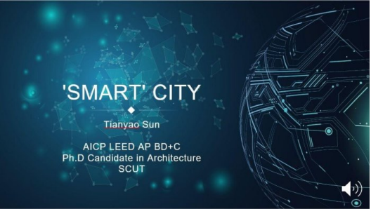
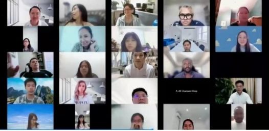

Dive into Innovation and doing Business in China
This course is for future founders and aspiring international career makers.
A new 3-week course with introductory lectures on emerging technologies like AI (artificial intelligence), e- commerce and blockchain as well as infrastructure-themed lessons on smart cities and mobility, all dissertations are in English by Chinese professors at SCUT.
The GBA is the course’s destination theme as it’s the economic hub of Southern China, home to many of China’s most iconic and innovative companies like Tencent, Huawei and DJI.
The university accredited course is geared towards any aspiring global professional who wants to gain a competitive understanding of China's business and futuristic technology sectors.
Whether you plan on working in China or want to embark on an international career, the course is the first short-term, digital degree course that simultaneously focuses on international business practices in China and its world-leading emerging technologies that are coming out of South China's Greater Bay Area; China's richest, most interconnected, inventive and commercially dynamic region China Innovation (yet still lesser-recognized than its counterparts of Beijing and Shanghai)!
Upon completing this course, you will understand how the business of innovation works through the lens of South China, its unprecedented growth in scale and global dominance in various emerging technologies.
DURATION: Three (3) Weeks
All lectures are broadcasted online for 2 weeks, instructed by international business professionals, and the South China University of Technology professors & instructors
Check out this video
on the Greater Bay Academy
And learn more about what this course offers
China's Greater Bay Area
Population 71 million | Economy $1.6 trillion
The Guangdong-Hong Kong-Macau Greater Bay Area (GBA), is a
megalopolis, also known as the Pearl River Delta, consisting of nine cities
and two special administrative regions in South China.
GreaterBay AreaStudy Tour South China University of Technology (SCUT) is one of China's leading universities. Globally, SCUT is ranked in the Top 200 with 15 programs ranked in the top 100 and is ranked in the top 5 of United Nations (UN) patent filings.
Located in the heart of Southern China in Guangzhou and close to Shenzhen, Hong Kong and Macau, it is active in academic exchange and dedicated to promoting collaboration with more than 100 overseas universities. In addition, SCUT has co-constructed three Confucius Institutes, respectively with Lancaster University in the UK; the University of Idaho in the US; and Audi AG, the municipal government of THI in Germany. In 2016, SCUT had more than 2,300 international students from 130 countries around the globe.
Find out more about SCUT: https://www.scut.edu.cn/en
The first-ever online university program on innovation in the Greater Bay Area
(GBA) of China launched in 2021 to a worldwide reception. Hosted by South
China University of Technology (SCUT) in Guangzhou, and created by Jon
Santangelo of GBA Academy, the first cohort surpassed its 150-student limit,
with 157 participants from 28 different countries and regions filling its virtual
seats.
All students who complete this program receive 1 college credit hour from
SCUT.
To date, this program has hosted over 350 students online.
A new 3-week program with introductory lectures on emerging technologies
like AI (artificial intelligence), e-commerce and blockchain as well as
infrastructure-themed lessons on smart cities and mobility, all dissertations
are in English by Chinese professors at SCUT.
The GBA is the course’s destination theme as it’s the economic hub of
Southern China, home to many of China’s most iconic and innovative
companies like Tencent, Huawei and DJI.
With an annual GDP of nearly 1.7 trillion USD, its transportation system
interconnects 86 million people across Hong Kong, Macau, and 9
metropolises in Guangdong Province, making the GBA larger than
counterpart bay areas of Tokyo, New York City and San Francisco.
Overviews of Shenzhen and Guangzhou, China’s first tier cities, as well as an
analysis on the current policy situation of the GBA are also touched upon in
one-hour or less lectures.
"Usually people defer to Beijing or Shanghai to learn about contemporary
China,” said Philippe Werner-Wildner, a Chilean professor who initially
proposed the basis of a GBA-themed program in 2019. “The Greater Bay
Area is where much of the future focus is now.”
Philippe, a Wuhan University PhD graduate who spent 5 years in Wuhan had
planned to bring delegations of South Americans to Guangzhou and
Shenzhen, with partner organization, Guangzhou-based, Greater Bay
Academy.
With study tour plans scrapped due to the pandemic, South China University
of Technology eventually opted to provide the academic component of the
GBA program online last month in October, which just completed its first
round ever.
Jon Santangelo, founder of Greater Bay Academy, who designed the course
curriculum alongside SCUT, said, “Our program is centred around Chinese
innovation with the GBA as the backdrop.”
“We’re honoured to partner with SCUT as they’re a top-ranking university that
is well regarded in China,” said Jon.
Cultural lessons on Eastern-Western business practices, traditional Chinese customs, and live, interactive Mandarin-language classes are also a part of the course.
Smart City is a lecture within our program
The first batch of students represented not only a wide range of countries, but
majors; from engineering, law, business, design, and more.
SCUT and Greater Bay Academy together were planning to host their first
delegation of visiting international students in 2020. The planned study tour
was in Guangzhou and Shenzhen in Guangdong province, the first region of
the People’s Republic of China to open to foreign businesses in 1979.
Today, Guangdong is the country’s most affluent province with approximately
60,000 factories producing 30% of China’s exports and also 30% of the
world’s textiles and toys.. Its capital, Guangzhou, and tech hub, Shenzhen,
two of China’s top four metropolises (Beijing and Shanghai being the other
two) are closely networked with GBA’s nine other key cities.
The Zhuhai-Macao-Hong Kong Bridge is the longest overseas bridge in the world.
Shenzhen (pictured below) garnered the nickname of “The Silicon Valley of the East” and is renowned for its high-tech ecosystem, praised by product makers as the quickest place in the world to assemble and manufacture electronics.

Guangzhou has been the historical trade hub of China for centuries and is home to Tesla-rival, X-Peng, and ‘flying car’ maker, Ehang, as well as Tencent’s ubiquitous app, WeChat.
Eager to learn all this and more, SCUT’s first online GBA program titled “Chinese Bridge” has a diverse cohort with students from just about every continent; from North America to South America, Africa and Asia, and Europe.
Macarena Millan, Founder of The Passengers has been fostering for several years the transfer of knowledge between Chile – Hong Kong, via Internships and Study Programs focused on Innovation.
“The Greater Bay Area is rapidly growing in interest, not only in Chile, but in South America” she said. Macarena’s Company introduced the GBA Online Program to dozens of Chileans and Peruvians who were first to enroll. “After completing the course students expressed satisfaction, and now they feel a greater attraction for the Tech & Entrepreneurship Chinese scene” declares.
Jane Lyu, a program manager at SCUT’s admission office, voiced how the combination of cultural and commercial lessons brought pleasant shocks and surprises, as proclaimed by students. “They enjoy learning about daily life in GBA, from ’Stories of everyday life in the Bay Area’ virtually tasting ‘three meals in one day" all while learning ‘Bay Area Speed’,” she said.
Many students stated their hopes to travel to China after the pandemic and experience the unique charm of the Bay Area and these stories firsthand. All students who complete the course are awarded a certificate of completion from South China University of Technology.
There is a step-by-step application process to secure a free place on the China Innovation online course. We are committed to helping applicants from any part of Africa access the China Innovation course opportunity. At the same time, we want to ensure the students on the course will gain the maximum benefit from participating.
The minimum entry requirements described below should be seen as benchmarks only. The University recognises that a wide variety of qualifications and experience qualify an applicant’s suitability for admission. The University will use its discretion to interpret the minimum qualifications.
The criteria for selection are:
The course requires you to complete the three sections listed below in order to examine your overall candidature and make a decision about your application.
Once you have completed all the blank sections and submitted your application, your application will be accessed to gain a full scholarship. If you qualify for a free virtual seat on the China Innovation online course, you will be contacted.
All applicants are required to pay a mandatory USD 75 application fee that is non-refundable and non-transferable.
We shall walk you through the application process and make sure you have everything you need
A new 3-week program with introductory lectures on emerging technologies like AI (artificial intelligence), e-commerce and blockchain as well as infrastructure- themed lessons on smart cities and mobility. All dissertations are in English by Chinese professors at SCUT and Emerging Technologies Certificate in Chinese Business
The university accredited course is entirely free and delivered 100% online for an Emerging Technologies Certificate in Chinese Business.
All applications should be made online via our application system. You need
to log in to http://chinainnovation.africa/apply,
enter your details and submit
scanned copies of all the application materials.
All applicants for the China Innovation course are required to pay a mandatory application fee of USD 75 which is non-refundable and non- transferable.
The deadline for the China innovation course is ideally two weeks before the start date. We do advise applicants to apply as early as possible in order to allow time for processing their application.
Please be aware that documents must not exceed 1MB in size and therefore
you may have to upload your documents in sections that do not exceed
1MB, or page by page, rather than as a full document. The online system
allows you to upload supporting documents only in JPG/JPEG/PNG format.
Please contact our Admissions Office via
admissions@chinainnovation.africa,
if you still
cannot upload your
application materials to our system.
If you wish to make any changes to your application, such as changing the information provided or adding supporting documents to your application, please contact our Admissions Office via admissions@chinainnovation.africa.
After we receive your online application, our Admissions Team aim for decisions to be made within two weeks. Should we require any further information or supporting documents in order to process your application then we will contact you by email, so please check that your contact details are correct.
All applications are considered in full based on their academic merits. You
are welcome to apply for the course. Please ensure that you clearly outline
in your statement any relevant experience that you have, and what you feel
makes you a good fit with the program.
You can check detailed entry requirements and submit an online application
via http://www.scut.edu.cn/apply
We hope that our FAQ will answer the majority of your queries relating to applying for a place on the SCUT China Innovation course. However, if you have a specific query that is not covered, the Admissions team’s contact details are as follows:
Address: 11 Unity Road, Ikeja, Lagos 100271, Nigeria.
Tel:
Email: info@chinainnovation.africa
admissions@chinainnovation.africa